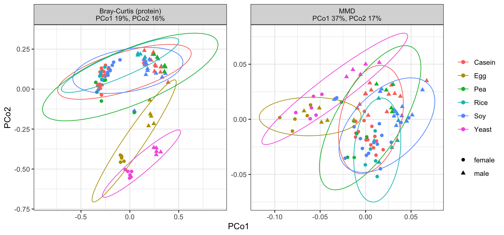
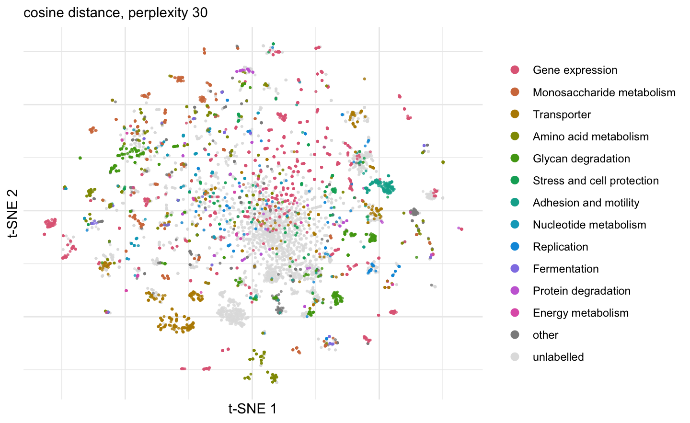
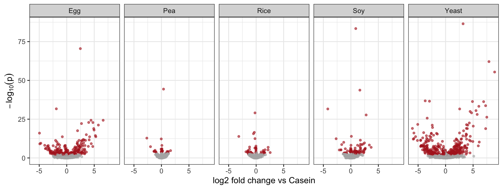
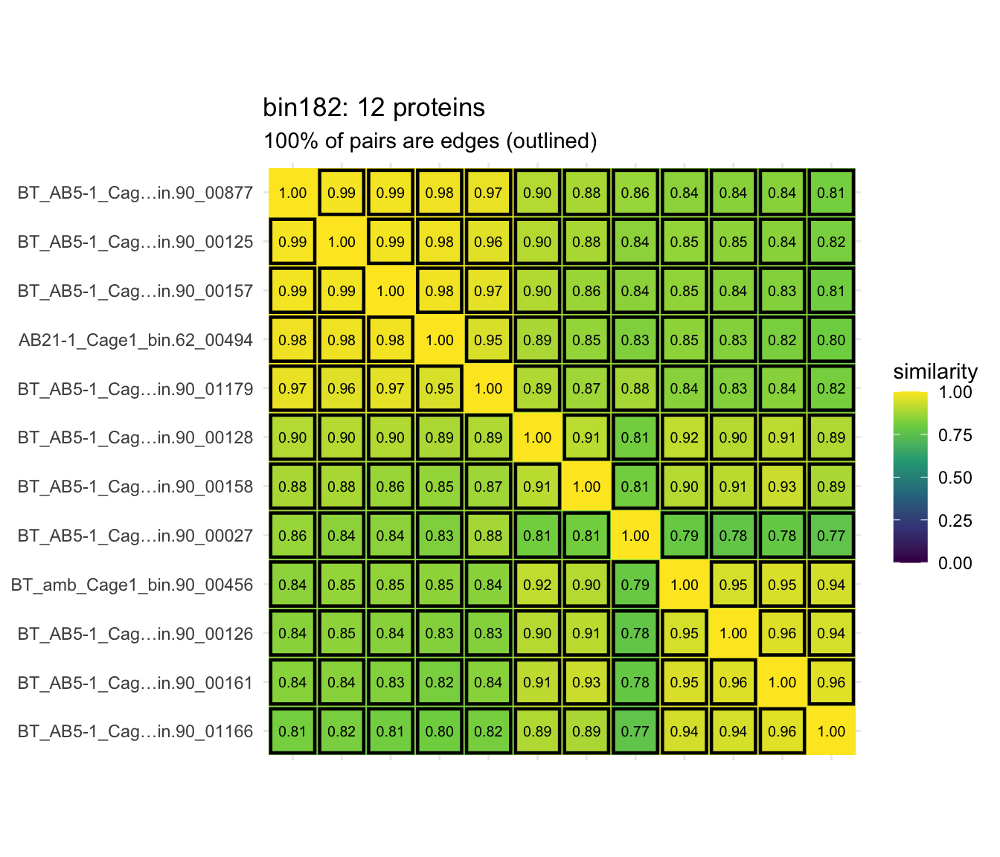
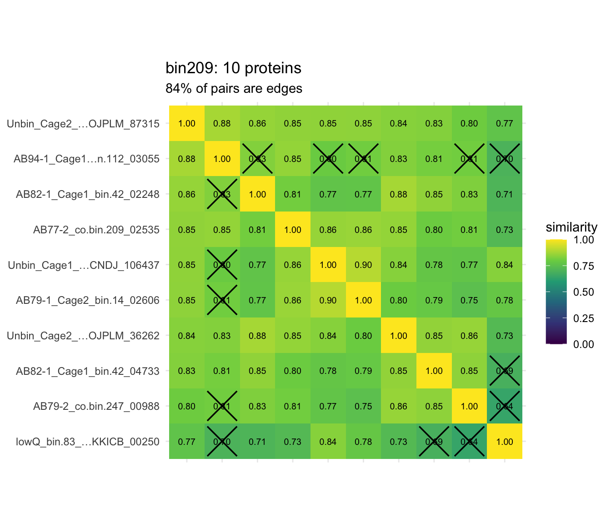

This page runs the repdist workflow on a published
metaproteome: beta diversity with MMD (sample_mmd(), the
maximum mean discrepancy under a Gaussian RBF kernel on the protein
embeddings), the representation space, MCL bins, and bin-level
differential abundance.
library(repdist)
library(ggplot2)
library(vegan)Blakeley-Ruiz et al. (Blakeley-Ruiz et al. 2025) fed twelve mice (two cages of three per sex) a series of defined diets, one week each, and measured faecal metaproteomes by spectral counting (PRIDE PXD041586).
The input sequences are already sequence-reduced. The microbial protein catalog comes from metagenome-assembled genomes annotated with PROKKA; unbinned genes were added only if no binned gene matched them at 90% identity (CD-HIT-2D), and the host and diet reference proteomes were clustered at 95% identity. Every reported protein also has at least one protein-unique peptide. Near-identical proteins are therefore rare in the table (see sequence identity of graph edges): the relatedness that MMD and the bins add beyond protein identity is mostly remote homology. This is consistent with the modest difference between MMD and protein-level Bray-Curtis below.
This page compares two diets of the same protein amount: 20% yeast protein (Yeast) against 20% casein (Casein), casein being the reference protein of the series. Only mice sampled on both diets are used (11 pairs), and diet is tested within mouse. The yeast diet came three weeks after the casein diet, so diet is confounded with feeding period in this serial design.
d <- readRDS(file.path("curated", "diet_yeast.rds"))
x <- d$proteins # sequences with TM-Vec embeddings
counts <- d$counts # raw PSM counts, samples x proteins
samples <- d$samples
ann <- d$annotation
d$provenance$contrast
#> Casein Yeast
#> "20CAS" "20YST"
table(samples$diet, samples$sex)
#>
#> female male
#> Casein 6 5
#> Yeast 6 5The curated object was built by data-raw/diet_yeast.R
from the paper’s supplementary Data Set 1 (PSM counts and sequences) and
Data Set 6 (annotation): every microbial protein with at least one PSM
in these 22 samples, its species group and GTDB lineage, the study’s
curated function, KEGG orthology (KO) assignments and CAZy families, and
a TM-Vec embedding computed with embed_proteins().
Protein length. Proteins longer than
MAX_AA = 1500 residues were removed before embedding: 162
of 11205 proteins, carrying 1.9% of the PSMs. This is an analysis
choice, not a package limit: embed_proteins() embeds
sequences of any length, but the TM-Vec head was trained on chains of up
to 1000 residues, so predicted TM-scores for much longer chains are
extrapolations.
c(samples = nrow(counts), proteins = ncol(counts))
#> samples proteins
#> 22 11043Sequencing depth differs by diet (yeast samples have about twice the PSMs of casein samples), and depth changes which proteins are observed. Both distances are therefore computed on counts rarefied to the smallest sample.
tapply(rowSums(counts), samples$diet, range)
#> $Casein
#> [1] 6580 18758
#>
#> $Yeast
#> [1] 19715 30594
set.seed(1)
rarefied <- rrarefy(counts, min(rowSums(counts)))
D <- list(
`Bray-Curtis (protein)` = vegdist(rarefied, "bray"),
MMD = sample_mmd(rarefied, x)
)
attr(D$MMD, "sigma")
#> [1] 1.145504PERMANOVA (Anderson 2001) and PERMDISP (Anderson 2006) use 999 permutations restricted to within mouse.
perm <- permute::how(blocks = samples$subject, nperm = 999)
tests <- t(vapply(D, function(Dk) {
set.seed(1)
a <- adonis2(Dk ~ diet, data = samples, permutations = perm)
bd <- betadisper(Dk, samples$diet)
set.seed(1)
pd <- permutest(bd, permutations = perm)
c(R2 = a$R2[1], F = a$F[1], p = a$`Pr(>F)`[1],
dispersion_Casein = mean(bd$distances[samples$diet == "Casein"]),
dispersion_Yeast = mean(bd$distances[samples$diet == "Yeast"]),
PERMDISP_p = pd$tab[1, "Pr(>F)"])
}, numeric(6)))
knitr::kable(tests, digits = 3)| R2 | F | p | dispersion_Casein | dispersion_Yeast | PERMDISP_p | |
|---|---|---|---|---|---|---|
| Bray-Curtis (protein) | 0.434 | 15.346 | 0.001 | 0.436 | 0.335 | 0.001 |
| MMD | 0.408 | 13.765 | 0.001 | 0.032 | 0.040 | 0.005 |
ord <- do.call(rbind, lapply(names(D), function(n) {
e <- cmdscale(D[[n]], k = 2, eig = TRUE)
rel <- 100 * e$eig / sum(e$eig[e$eig > 0])
data.frame(PCo1 = e$points[, 1], PCo2 = e$points[, 2],
diet = samples$diet, subject = samples$subject,
panel = sprintf("%s\nPCo1 %.0f%%, PCo2 %.0f%%", n, rel[1], rel[2]))
}))
ord$panel <- factor(ord$panel, unique(ord$panel))
ggplot(ord, aes(PCo1, PCo2)) +
geom_line(aes(group = subject), colour = "grey75") +
geom_point(aes(colour = diet), size = 2) +
facet_wrap(~panel, scales = "free") +
labs(colour = NULL) +
theme_bw() +
theme(legend.position = "bottom")
Each grey line joins the casein and yeast samples of one mouse.
Both distances separate the diets with similar effect sizes, and for both PERMDISP also detects unequal spread, in opposite directions: casein samples are more dispersed under Bray-Curtis, yeast samples under MMD. PERMANOVA with equal group sizes is fairly robust to unequal dispersion, and the paired samples are displaced along the first axis in both ordinations, so the separation is mainly a shift in location, with a difference in spread on top. Under Bray-Curtis the second axis separates the two mouse groups, which came from different vendor rooms.
plot_tsne() maps all proteins by cosine distance (one
minus the predicted TM-score), coloured by the study’s manually curated
broad function; proteins without one are grey. The map shows
neighbourhoods in representation space; it is not evidence of function,
and t-SNE does not preserve distances between groups.
set.seed(1)
plot_tsne(x, color = setNames(ann$broad_function, ann$protein))
The study assigned a KO to 79% of the proteins. Proteins without a KO have fewer close relatives in the catalog: the quartiles of each protein’s nearest-neighbour predicted TM-score, by KO status:
ko_status <- ifelse(is.na(ann$ko), "no KO", "KO assigned")
Z <- S4Vectors::mcols(x)$embedding
Z <- Z / sqrt(rowSums(Z^2))
sim <- tcrossprod(Z)
diag(sim) <- NA
nearest <- apply(sim, 1, max, na.rm = TRUE)
rm(sim)
tapply(nearest, ko_status, quantile, probs = c(0.25, 0.5, 0.75))
#> $`KO assigned`
#> 25% 50% 75%
#> 0.9051614 0.9738381 0.9949341
#>
#> $`no KO`
#> 25% 50% 75%
#> 0.7800647 0.8554373 0.9247885The similarity graph and MCL bins use the package defaults: an edge needs a predicted TM-score of at least 0.7 and a local alignment covering at least half of both sequences; MCL inflation is 2.
S <- protein_similarity(x, n_cores = BiocParallel::multicoreWorkers())
b <- bin_proteins(S)
b$graph
#> proteins edges isolated components
#> 11043 85928 1828 2737
#> largest_component
#> 1292
sizes <- lengths(b$clusters)
c(proteins = length(x), bins = length(sizes),
singleton_bins = sum(sizes == 1),
singleton_fraction = round(sum(sizes == 1) / length(x), 3))
#> proteins bins singleton_bins singleton_fraction
#> 11043.000 3149.000 1839.000 0.167
table(cut(sizes, c(0, 1, 2, 5, 10, 50, Inf),
labels = c("1", "2", "3-5", "6-10", "11-50", ">50")))
#>
#> 1 2 3-5 6-10 11-50 >50
#> 1839 453 430 221 190 16The 11043 proteins form 2737 connected components, the largest with 1292 proteins; MCL splits the components into 3149 bins, 1839 of them singletons.
A random sample of 5,000 graph edges, aligned as in
protein_similarity() (local, BLOSUM62), by percent
identity:
set.seed(1)
ij <- which(upper.tri(S) & S > 0, arr.ind = TRUE)
ij <- ij[sample(nrow(ij), 5000), ]
seqs <- x
S4Vectors::mcols(seqs) <- NULL
aln <- pwalign::pairwiseAlignment(seqs[ij[, 1]], seqs[ij[, 2]],
substitutionMatrix = "BLOSUM62", type = "local",
gapOpening = 11, gapExtension = 1)
identity <- pwalign::pid(aln, type = "PID1")
round(prop.table(table(cut(identity, c(0, 30, 40, 50, 70, 90, 100.01),
right = FALSE, labels = c("<30%", "30-40%", "40-50%", "50-70%",
"70-90%", ">=90%")))), 3)
#>
#> <30% 30-40% 40-50% 50-70% 70-90% >=90%
#> 0.355 0.166 0.131 0.219 0.121 0.008Most edges join proteins with similar predicted structure but low sequence identity (median 38%): remote homologs, which sequence identity alone would not group.
Raw (unrarefied) protein counts are summed to bins with
bin_glom() and tested with DESeq2 (Love et al.
2014). The design ~ subject + diet pairs the two
samples of each mouse; size factors use the poscounts
estimator because no bin is observed in every sample. Fold changes are
Yeast relative to Casein, shrunk with the normal prior for
display; p-values are from the Wald test.
binned <- bin_glom(counts, b)
dds <- DESeq2::DESeqDataSetFromMatrix(round(t(binned)), samples,
design = ~ subject + diet)
dds <- DESeq2::DESeq(dds, sfType = "poscounts", quiet = TRUE)
res <- DESeq2::results(dds, name = "diet_Yeast_vs_Casein", alpha = 0.05)
lfc <- DESeq2::lfcShrink(dds, coef = "diet_Yeast_vs_Casein", type = "normal",
res = res, quiet = TRUE)
DESeq2::summary(res)
#>
#> out of 3149 with nonzero total read count
#> adjusted p-value < 0.05
#> LFC > 0 (up) : 283, 9%
#> LFC < 0 (down) : 118, 3.7%
#> outliers [1] : 0, 0%
#> low counts [2] : 2381, 76%
#> (mean count < 1)
#> [1] see 'cooksCutoff' argument of ?results
#> [2] see 'independentFiltering' argument of ?resultsvolcano <- data.frame(log2FC = lfc$log2FoldChange, p = res$pvalue,
significant = !is.na(res$padj) & res$padj < 0.05)
ggplot(volcano[!is.na(volcano$p), ], aes(log2FC, -log10(p),
colour = significant)) +
geom_point(size = 1, alpha = 0.6) +
scale_colour_manual(values = c(`TRUE` = "firebrick", `FALSE` = "grey60"),
labels = c(`TRUE` = "padj < 0.05", `FALSE` = "not significant")) +
labs(x = "log2 fold change, Yeast vs Casein (shrunk)",
y = expression(-log[10](p)), colour = NULL) +
theme_bw()
Each bin’s annotation summarises its members. A label shared by every
annotated member is shown with its count (3/4 means three
of four members carry it, the fourth is unannotated); bins whose
annotated members disagree are marked mixed with the number
of distinct labels and the most frequent one.
summarise_labels <- function(v) {
n <- length(v)
v <- v[!is.na(v)]
if (!length(v)) return("-")
tab <- sort(table(v), decreasing = TRUE)
top <- sprintf("%s (%d/%d)", strtrim(names(tab)[1], 40), tab[[1]], n)
if (length(tab) == 1L) top else
sprintf("mixed, %d: %s", length(tab), top)
}
bin_table <- function(bins) {
data.frame(
bin = bins,
proteins = sizes[bins],
taxon = vapply(b$clusters[bins],
function(m) summarise_labels(ann[m, "taxon"]), ""),
`function` = vapply(b$clusters[bins],
function(m) summarise_labels(ann[m, "consensus_annotation"]), ""),
KO = vapply(b$clusters[bins],
function(m) summarise_labels(ann[m, "ko"]), ""),
log2FC = round(lfc[bins, "log2FoldChange"], 2),
p = formatC(res[bins, "pvalue"], format = "e", digits = 1),
padj = formatC(res[bins, "padj"], format = "e", digits = 1),
check.names = FALSE, row.names = NULL
)
}
sig <- rownames(res)[!is.na(res$padj) & res$padj < 0.05]
sig <- sig[order(res[sig, "padj"])]
up_yeast <- head(sig[lfc[sig, "log2FoldChange"] > 0], 10)
up_casein <- head(sig[lfc[sig, "log2FoldChange"] < 0], 10)The ten most significant bins higher on the yeast diet:
knitr::kable(bin_table(up_yeast))| bin | proteins | taxon | function | KO | log2FC | p | padj |
|---|---|---|---|---|---|---|---|
| bin182 | 12 | mixed, 2: Bacteroides thetaiotaomicron (11/12) | GH92 family glycosyl hydrolase (12/12) | - | 9.81 | 7.9e-52 | 6.0e-49 |
| bin414 | 6 | mixed, 4: Alistipes sp002428825 (1/6) | mixed, 2: Component of the SKI complex involved in (1/6) | mixed, 5: K02656 (2/6) | 5.01 | 8.2e-37 | 3.1e-34 |
| bin847 | 3 | Bacteroides thetaiotaomicron (3/3) | mixed, 3: Multidrug efflux ATP-binding/permease pr (1/3) | - | 7.79 | 6.3e-32 | 1.2e-29 |
| bin854 | 3 | Bacteroides thetaiotaomicron (3/3) | - | K12035 (2/3) | 7.88 | 5.0e-31 | 7.7e-29 |
| bin2474 | 1 | Bacteroides thetaiotaomicron (1/1) | - | - | 7.85 | 8.0e-31 | 1.0e-28 |
| bin2537 | 1 | Bacteroides thetaiotaomicron (1/1) | - | - | 7.77 | 1.2e-29 | 1.4e-27 |
| bin588 | 4 | mixed, 3: Bacteroides thetaiotaomicron (2/4) | WD40-type repeat domain (1/4) | K18235 (1/4) | 5.38 | 6.7e-29 | 6.4e-27 |
| bin2521 | 1 | Bacteroides thetaiotaomicron (1/1) | - | - | 5.13 | 4.7e-28 | 3.6e-26 |
| bin2502 | 1 | Bacteroides thetaiotaomicron (1/1) | glucosylceramidase 1 (1/1) | K01201 (1/1) | 7.32 | 7.9e-26 | 5.5e-24 |
| bin202 | 11 | mixed, 11: Acutalibacter sp. AB50-1 (1/11) | Galactokinase (11/11) | K00849 (11/11) | 5.83 | 1.1e-25 | 7.2e-24 |
The most significant yeast-enriched bin, bin182, holds 12 proteins that the study annotated as GH92 family glycosyl hydrolases (α-mannosidases), almost all from B. thetaiotaomicron. The source study reported these enzymes increasing on the yeast diet and linked them to the mannan of yeast cell-wall glycoproteins (Blakeley-Ruiz et al. 2025). None of the bin’s members has a KO, so a KO-level summary would not have grouped them.
The ten most significant bins higher on the casein diet:
knitr::kable(bin_table(up_casein))| bin | proteins | taxon | function | KO | log2FC | p | padj |
|---|---|---|---|---|---|---|---|
| bin1196 | 2 | Romboutsia ilealis (2/2) | - | - | -8.28 | 4.9e-33 | 1.2e-30 |
| bin16 | 51 | mixed, 22: Acetatifactor sp. AB79-3 (6/51) | mixed, 4: Carbohydrate ABC transporter substrate-b (32/51) | mixed, 3: K17318 (46/51) | -5.53 | 1.8e-28 | 1.5e-26 |
| bin209 | 10 | mixed, 5: Acetatifactor sp. AB82-1 (2/10) | - | K19630 (1/10) | -7.37 | 4.3e-23 | 1.6e-21 |
| bin2 | 124 | mixed, 57: Bifidobacterium globosum (4/124) | mixed, 9: Diacetylchitobiose binding protein NgcE (17/124) | mixed, 12: K02027 (63/124) | -3.18 | 2.7e-22 | 9.3e-21 |
| bin2457 | 1 | - | - | - | -7.02 | 3.8e-21 | 1.2e-19 |
| bin121 | 16 | mixed, 10: Oscillospiraceae bacterium AB54-2 (3/16) | - | K15580 (16/16) | -5.88 | 6.5e-20 | 1.7e-18 |
| bin135 | 15 | mixed, 10: 14-2 sp. AB103-0 (1/15) | Formate acetyltransferase (14/15) | mixed, 2: K00656 (14/15) | -4.12 | 6.5e-20 | 1.7e-18 |
| bin315 | 7 | mixed, 6: Acetatifactor sp003612485 (2/7) | - | K02027 (7/7) | -7.31 | 2.1e-19 | 5.1e-18 |
| bin154 | 13 | mixed, 7: Staphylococcus nepalensis (3/13) | mixed, 2: Acetylornithine aminotransferase (9/13) | mixed, 3: K00821 (9/13) | -3.28 | 8.6e-19 | 1.9e-17 |
| bin366 | 6 | mixed, 4: Romboutsia ilealis (2/6) | mixed, 2: SASP are bound to spore DNA; protect the (2/6) | mixed, 3: K06419 (2/6) | -5.84 | 1.7e-16 | 2.9e-15 |
Several casein-enriched bins are large and mixed across taxa, for example substrate-binding proteins of carbohydrate ABC transporters: they summarise a structural family shared by many organisms rather than one organism’s protein.
plot_bin_similarity() shows all pairwise predicted
TM-scores within one bin. A black outline marks a pair that
is an edge of the graph: it passed both thresholds
(predicted TM-score ≥ 0.7, coverage ≥ 0.5) and keeps its similarity as
the edge weight. A cell without an outline is not an edge (weight 0 in
S). MCL clusters along the outlined edges. Shown are the
most significant bin with 4 to 30 members in each direction, with a
count of their member pairs: edges, pairs below the similarity
threshold, and pairs above it that failed the coverage gate.
pick <- function(bins) bins[sizes[bins] >= 4 & sizes[bins] <= 30][1]
shown <- c(Yeast = pick(sig[lfc[sig, "log2FoldChange"] > 0]),
Casein = pick(sig[lfc[sig, "log2FoldChange"] < 0]))
pair_types <- function(bin) {
m <- b$clusters[[bin]]
R <- tcrossprod(Z[m, ])
E <- S[m, m] > 0
up <- upper.tri(E)
c(pairs = sum(up), edges = sum(E[up]), below_0.7 = sum(R[up] < 0.7),
failed_coverage = sum(R[up] >= 0.7 & !E[up]))
}
data.frame(bin = shown, t(vapply(shown, pair_types, numeric(4))))| bin | pairs | edges | below_0.7 | failed_coverage | |
|---|---|---|---|---|---|
| Yeast | bin182 | 66 | 66 | 0 | 0 |
| Casein | bin209 | 45 | 38 | 2 | 5 |
plot_bin_similarity(b, shown[["Yeast"]], S, x)
m <- b$clusters[[shown[["Yeast"]]]]
knitr::kable(ann[m, c("taxon", "consensus_annotation", "ko", "cazy")],
row.names = TRUE)| taxon | consensus_annotation | ko | cazy | |
|---|---|---|---|---|
| AB21-1_Cage1_bin.62_00494 | UBA7173 sp. AB21-1 | GH92 family glycosyl hydrolase | NA | GH94;GH92 |
| BT_AB5-1_Cage1_bin.90_00027 | Bacteroides thetaiotaomicron | GH92 family glycosyl hydrolase | NA | 3.2.1.-;GH92 |
| BT_AB5-1_Cage1_bin.90_00125 | Bacteroides thetaiotaomicron | GH92 family glycosyl hydrolase | NA | GH94;3.2.1.113;GH92 |
| BT_AB5-1_Cage1_bin.90_00126 | Bacteroides thetaiotaomicron | GH92 family glycosyl hydrolase | NA | GH92 |
| BT_AB5-1_Cage1_bin.90_00128 | Bacteroides thetaiotaomicron | GH92 family glycosyl hydrolase | NA | GH92 |
| BT_AB5-1_Cage1_bin.90_00157 | Bacteroides thetaiotaomicron | GH92 family glycosyl hydrolase | NA | GH94;3.2.1.113;GH92 |
| BT_AB5-1_Cage1_bin.90_00158 | Bacteroides thetaiotaomicron | GH92 family glycosyl hydrolase | NA | GH92 |
| BT_AB5-1_Cage1_bin.90_00161 | Bacteroides thetaiotaomicron | GH92 family glycosyl hydrolase | NA | GH92 |
| BT_AB5-1_Cage1_bin.90_00877 | Bacteroides thetaiotaomicron | GH92 family glycosyl hydrolase | NA | GH94;GH92 |
| BT_AB5-1_Cage1_bin.90_01166 | Bacteroides thetaiotaomicron | GH92 family glycosyl hydrolase | NA | GH92 |
| BT_AB5-1_Cage1_bin.90_01179 | Bacteroides thetaiotaomicron | GH92 family glycosyl hydrolase | NA | GH94;GH92 |
| BT_amb_Cage1_bin.90_00456 | Bacteroides thetaiotaomicron | GH92 family glycosyl hydrolase | NA | GH92 |
plot_bin_similarity(b, shown[["Casein"]], S, x)
m <- b$clusters[[shown[["Casein"]]]]
knitr::kable(ann[m, c("taxon", "consensus_annotation", "ko", "cazy")],
row.names = TRUE)| taxon | consensus_annotation | ko | cazy | |
|---|---|---|---|---|
| AB77-2_co.bin.209_02535 | Acetatifactor sp. AB77-2 | NA | NA | NA |
| AB79-1_Cage2_bin.14_02606 | Acetatifactor sp. AB79-1 | NA | NA | NA |
| AB79-2_co.bin.247_00988 | Acetatifactor sp. AB79-2 | NA | NA | NA |
| AB82-1_Cage1_bin.42_02248 | Acetatifactor sp. AB82-1 | NA | K19630 | NA |
| AB82-1_Cage1_bin.42_04733 | Acetatifactor sp. AB82-1 | NA | NA | NA |
| AB94-1_Cage1_bin.112_03055 | Kineothrix sp. AB94-1 | NA | NA | NA |
| lowQ_bin.83_Cage2_PPEKKICB_00250 | NA | NA | NA | NA |
| Unbin_Cage1_FEAPCNDJ_106437 | NA | NA | NA | NA |
| Unbin_Cage2_HKMOJPLM_36262 | NA | NA | NA | NA |
| Unbin_Cage2_HKMOJPLM_87315 | NA | NA | NA | NA |
In the GH92 bin every pair of members is an edge. In bin209, mostly unannotated proteins from several Acetatifactor species groups and unbinned contigs, some members are joined only through shared neighbours (pairs below 0.7) and some similar pairs are not edges because their alignment covers less than half of one sequence. MCL keeps both kinds of pair in one bin; the thresholds act on edges, not on every pair.
sessionInfo()
#> R version 4.5.2 (2025-10-31)
#> Platform: aarch64-apple-darwin20
#> Running under: macOS 27.0.1
#>
#> Matrix products: default
#> BLAS: /System/Library/Frameworks/Accelerate.framework/Versions/A/Frameworks/vecLib.framework/Versions/A/libBLAS.dylib
#> LAPACK: /Library/Frameworks/R.framework/Versions/4.5-arm64/Resources/lib/libRlapack.dylib; LAPACK version 3.12.1
#>
#> locale:
#> [1] en_US/en_US/en_US/C/en_US/en_US
#>
#> time zone: America/New_York
#> tzcode source: internal
#>
#> attached base packages:
#> [1] stats graphics grDevices utils datasets methods base
#>
#> other attached packages:
#> [1] vegan_2.7-5 permute_0.9-10 ggplot2_4.0.3 repdist_0.99.0
#>
#> loaded via a namespace (and not attached):
#> [1] SummarizedExperiment_1.40.0 gtable_0.3.6
#> [3] xfun_0.58 bslib_0.11.0
#> [5] Biobase_2.70.0 lattice_0.22-9
#> [7] vctrs_0.7.3 tools_4.5.2
#> [9] generics_0.1.4 stats4_4.5.2
#> [11] parallel_4.5.2 tibble_3.3.1
#> [13] cluster_2.1.8.2 pkgconfig_2.0.3
#> [15] Matrix_1.7-5 RColorBrewer_1.1-3
#> [17] S7_0.2.2 S4Vectors_0.48.1
#> [19] lifecycle_1.0.5 compiler_4.5.2
#> [21] farver_2.1.2 Biostrings_2.78.0
#> [23] DESeq2_1.50.2 Seqinfo_1.0.0
#> [25] codetools_0.2-20 htmltools_0.5.9
#> [27] sass_0.4.10 yaml_2.3.12
#> [29] pillar_1.11.1 crayon_1.5.3
#> [31] jquerylib_0.1.4 MASS_7.3-65
#> [33] BiocParallel_1.44.0 cachem_1.1.0
#> [35] DelayedArray_0.36.1 abind_1.4-8
#> [37] MCL_1.0 nlme_3.1-169
#> [39] locfit_1.5-9.12 tidyselect_1.2.1
#> [41] digest_0.6.39 Rtsne_0.17
#> [43] dplyr_1.2.1 labeling_0.4.3
#> [45] splines_4.5.2 fastmap_1.2.0
#> [47] grid_4.5.2 SparseArray_1.10.10
#> [49] expm_1.0-0 cli_3.6.6
#> [51] magrittr_2.0.5 S4Arrays_1.10.1
#> [53] withr_3.0.3 scales_1.4.0
#> [55] rmarkdown_2.31 pwalign_1.6.0
#> [57] XVector_0.50.0 matrixStats_1.5.0
#> [59] otel_0.2.0 evaluate_1.0.5
#> [61] knitr_1.51 GenomicRanges_1.62.1
#> [63] IRanges_2.44.0 viridisLite_0.4.3
#> [65] mgcv_1.9-4 rlang_1.3.0
#> [67] Rcpp_1.1.2 glue_1.8.1
#> [69] BiocGenerics_0.56.0 jsonlite_2.0.0
#> [71] R6_2.6.1 MatrixGenerics_1.22.0